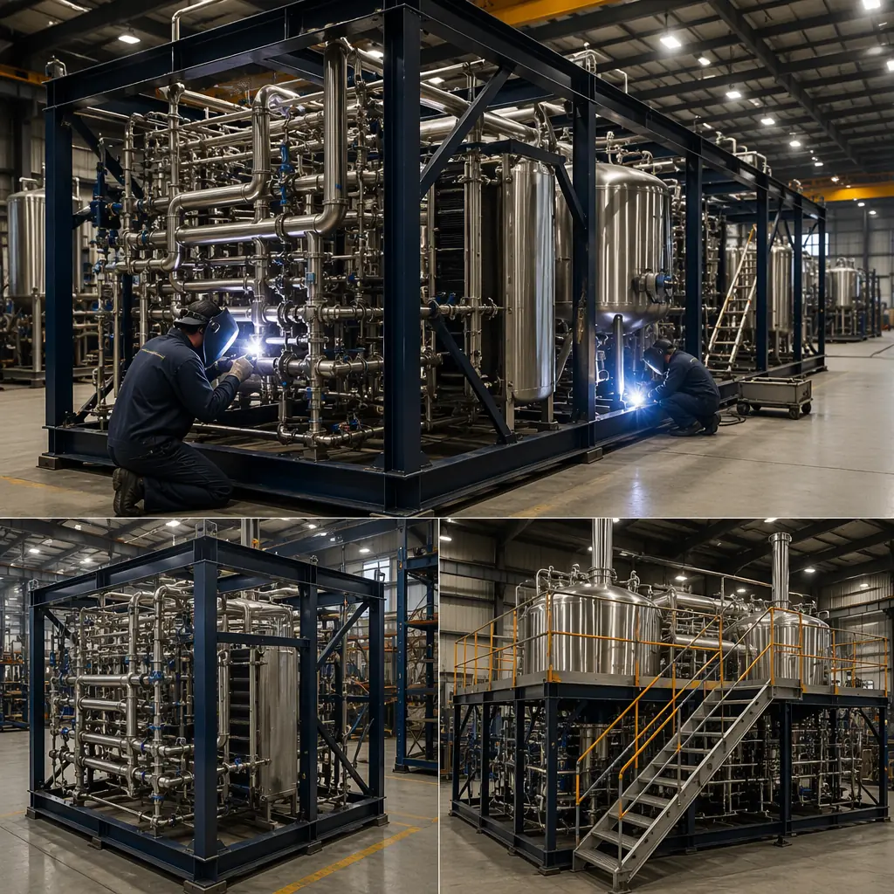
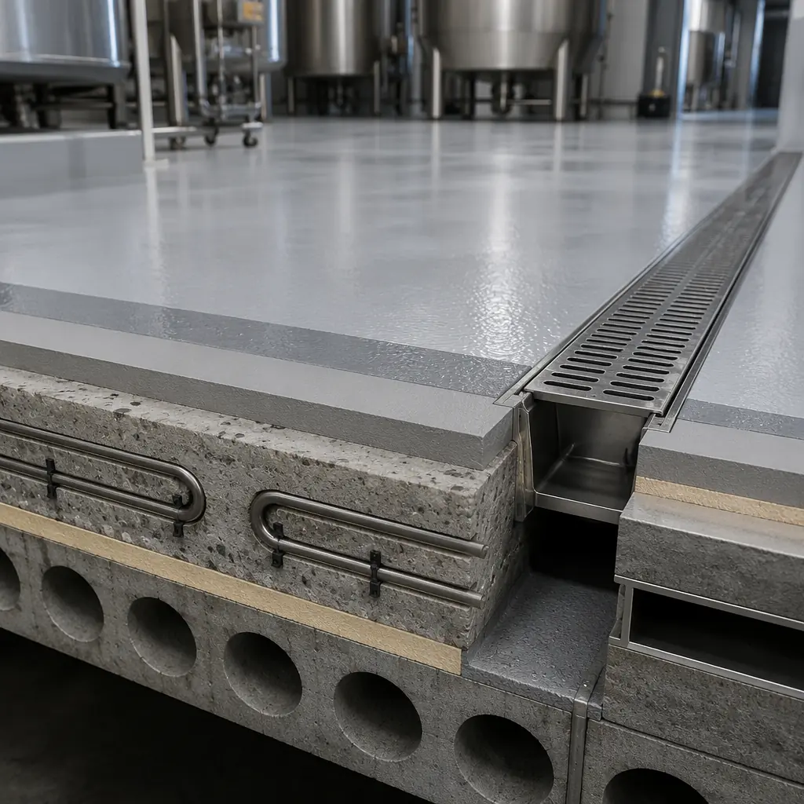
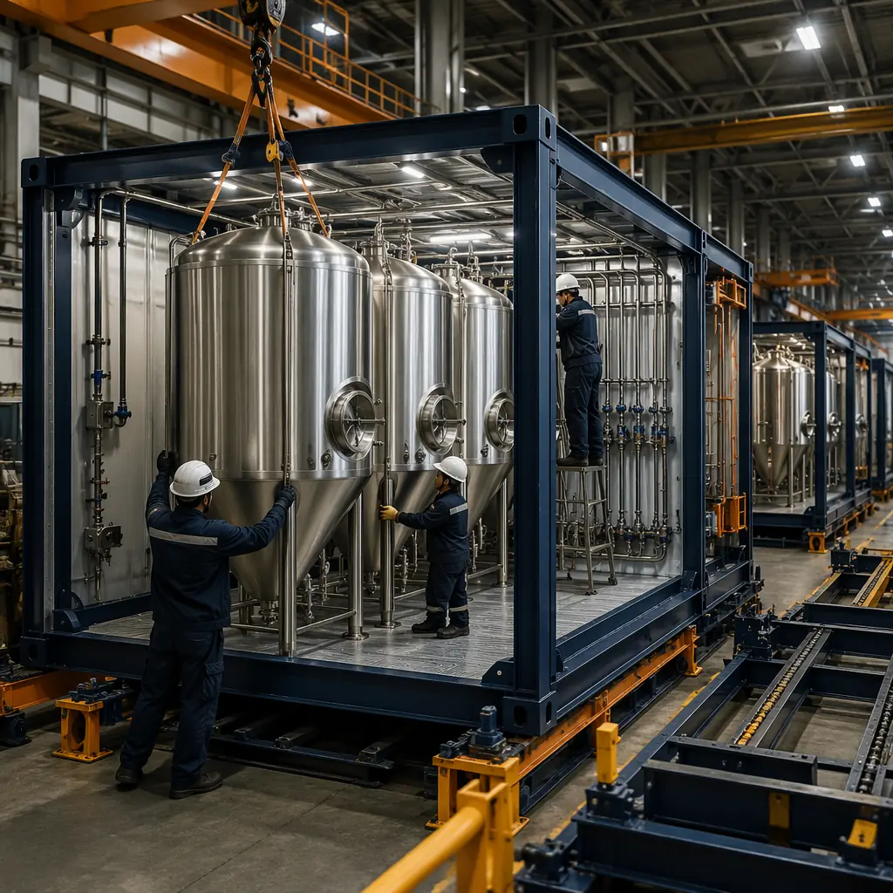
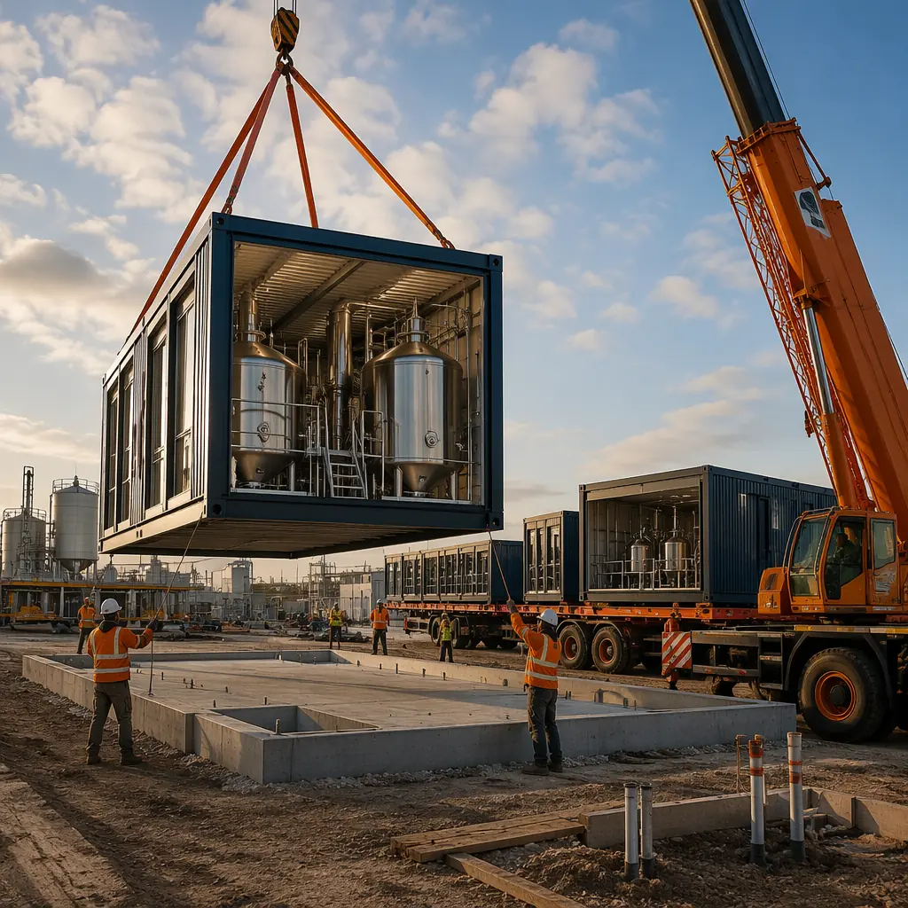
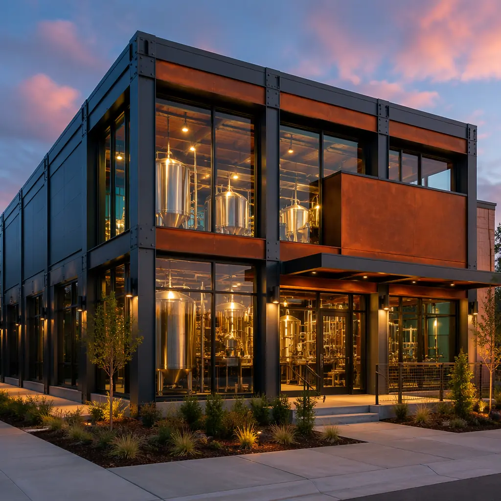

The United States is home to more than 9,500 craft breweries according to the Brewers Association's 2025 industry review, with an estimated 800-1,200 facilities actively planning production expansion or new-build projects annually. The craft distilling sector mirrors this trajectory: the American Craft Spirits Association reports 2,700+ craft distilleries operating nationwide, with production capacity expansions driving the majority of capital projects. Traditional brewery and distillery construction carries a punishing 12-18 month timeline from groundbreaking to first production batch — a delay that costs craft producers an estimated $35,000-85,000 per month in lost revenue, employee carrying costs, and contract brewing fees. Modular prefabricated process construction compresses this to 7-10 months by manufacturing brewhouse platforms, fermentation cellars, and packaging halls as factory-integrated modules while site foundations and utility infrastructure are prepared in parallel. For a regional craft brewery expanding from 15,000 bbl/year to 50,000 bbl/year, modular delivery means reaching production targets two quarters earlier — worth $1.2-2.5 million in incremental revenue at craft beer margins. MODURA brings 500+ completed modular projects across 18 countries and 4 ISO 9001/14001 certified factories to the craft production sector.

The Modular Brewhouse Platform: Process-Integrated Manufacturing for the Heart of the Brewery
The brewhouse — housing the mash tun, lauter tun, brew kettle, and whirlpool — represents the highest process-density zone in any production brewery. A conventional brewhouse build follows a 14-20 week sequence: structural steel erection, vessel setting, process piping installation, steam and condensate tie-in, floor coating, and sanitary finish-out. Every trade operates in a confined, wet environment, and schedule conflicts between pipefitters, electricians, and concrete finishers routinely add 3-5 weeks. Modular brewhouse construction compresses this entire sequence into a factory-integrated process module that arrives on site as a single operational platform:
- 30-50 bbl brewhouse modules: The brewhouse platform is fabricated as a structural steel module (ASTM A572 Grade 50) with factory-set vessel anchor points achieving ±2mm positional tolerance. The mash tun, lauter tun, brew kettle, and whirlpool are set, leveled, and laser-aligned at the factory — eliminating the 3-5 day field alignment process that causes 40% of conventional brewhouse delays. The module ships with vessels secured to engineered tie-down points and is craned into position as a single lift, typically 35,000-55,000 lbs for a 50 bbl system.
- Factory-installed process piping: All process piping — wort transfer lines (2-3 inch Schedule 10 304L stainless, TIG welded and passivated), hot liquor lines (2 inch Schedule 40 304L, insulated with 1-1/2 inch mineral wool and aluminum jacketing), and CIP supply/return (1-1/2 inch 316L stainless, orbitally welded) — is fabricated, welded, pressure-tested, and passivated at the factory. Factory orbital welding achieves ASME BPE surface finish standards of Ra 0.5 μm (20 μin) on product-contact surfaces, versus Ra 1.2-1.6 μm typical of field TIG welding. Each weld is documented by welder ID, date, purge gas flow rate, and borescope inspection results — documentation that FDA and TTB inspectors increasingly expect at plan review for production facilities.
- Integrated steam and condensate systems: Process steam piping (15-150 psi saturated, 2-4 inch Schedule 80 carbon steel with 2-1/2 inch calcium silicate insulation) is pre-routed with factory-installed steam traps (Armstrong or Spirax Sarco inverted bucket type), strainers, and condensate return manifolds. The complete steam distribution system is hydrostatically tested to 1.5x MAWP at the factory. For a 50 bbl brewhouse, this eliminates approximately 180 pipefitter-hours of field steam work and the associated 2-3 week schedule window. Our coverage of modular MEP systems integration details how factory pre-installation of mechanical systems reduces field labor by 65-80% across building types.
- Floor drainage with factory-cast slope: The brewhouse module floor is cast with a 2% grade to trench drains, factory-finished with a 3/16-inch troweled epoxy coating (rated for 180°F intermittent exposure and CIP chemical resistance per ASTM C722). Trench drain bodies (12-inch wide, 304L stainless, 1/4-inch per foot longitudinal slope) are cast-in-place and connected to a consolidated module drain header. Conventional brewhouse floor sloping requires a separate concrete pour and 5-7 days cure time — eliminated entirely in modular construction.
A conventional 50 bbl brewhouse build carries approximately $12,000-18,000 in weekly general conditions costs. Eliminating 6-8 weeks of brewhouse site work through modular delivery recovers $72,000-144,000 in general conditions savings alone — before accounting for accelerated production revenue. As covered in modular construction cost per square foot, these schedule-driven savings frequently exceed the direct construction cost differential.

Fermentation Cellar Modules: High-Density Tank Farms in Factory-Built Vessel Bays
The fermentation cellar is where capital intensity peaks in brewery construction. A 50,000 bbl/year brewery typically deploys 12-20 fermentation vessels of 100-400 bbl capacity, each weighing 15,000-55,000 lbs when full. The structural demands are formidable: floor loading of 1,500-2,500 kg/m² (310-510 psf) under tank point loads, glycol cooling loops maintained at -4°C to -2°C (25-28°F), and a sanitary environment requiring USDA-compliant wall and floor finishes. Modular fermentation cellar modules address each of these demands through factory engineering:
- Engineered tank foundations: Each fermentation module incorporates a structural slab engineered for the specific vessel layout: 12-inch reinforced concrete (4,000 psi, #5 rebar at 12-inch centers each way, both mats) with integrated tank ring beam footings 18 inches deep by 24 inches wide. Tank anchor bolt patterns (typically 12-16 bolts per vessel, 1-1/4 inch diameter, ASTM F1554 Grade 55) are cast into the slab using a CNC-cut template achieving ±1.5mm bolt circle accuracy. This eliminates the single most expensive field error in brewery construction: misaligned anchor bolts that require epoxy-grouted remedial anchoring at $800-1,200 per bolt.
- Pre-charged glycol cooling loops: Factory-installed glycol supply and return headers (3-4 inch Schedule 40 carbon steel, welded and hydrostatically tested to 150 psi) with individual tank drops (1-1/4 inch, ball valve and solenoid valve at each vessel connection) are pre-insulated with 1-inch closed-cell elastomeric foam (Armaflex or equal, ≤0.27 BTU·in/hr·ft²·°F thermal conductivity). The complete glycol loop is factory-charged with inhibited propylene glycol (30% concentration, freeze point -13°C) and pressure-tested for 24 hours before shipment. On-site, the cellar module connects to the central chiller plant through two header connections — supply and return — rather than requiring 30-50 individual tank drops to be field-fabricated. As detailed in modular industrial warehouse construction, factory integration of process utilities is the single largest source of schedule compression in modular industrial buildings.
- Fermentation control integration: Each module includes a factory-installed control panel with PLC (Allen-Bradley CompactLogix or Siemens S7-1200), temperature transmitters (RTD, 3-wire, ±0.1°C accuracy at tank thermowell), and solenoid valve wiring pre-terminated to a marshalling cabinet. The panel is factory-tested with simulated I/O before shipping. Site integration requires only power feed (480V/3-phase/60Hz) and Ethernet connection to the brewery's SCADA network — reducing field instrumentation commissioning from 3-4 weeks to 3-4 days.
- Sanitary wall and ceiling systems: Cellar module interiors are finished with USDA/3-A compliant materials: 16-gauge 304 stainless steel wall panels (4B finish, #4 polish at product-contact zones) to 8-foot height, with FRP (fiberglass reinforced plastic) panels above to the 16-foot clear ceiling. All horizontal ledges are eliminated — wall-to-floor junctions use 2-inch radius cove base (304L stainless, continuously welded and ground flush) and wall-to-ceiling junctions are sealed with FDA-compliant silicone. These sanitary finishes meet the same standards explored in modular clean room construction, where surface hygiene and cleanability requirements parallel those of food and beverage production.
For distilleries, fermentation cellar modules incorporate additional requirements: Class I Division 2 electrical classification in still rooms per NEC Article 501, explosion-proof lighting fixtures (Crouse-Hinds or Appleton, factory-sealed), and continuous ethanol vapor monitoring with infrared sensors (0-100% LEL, 4-20mA output to central alarm panel). The factory installation of classified electrical equipment eliminates the field inspection failures that delay 25-30% of conventional distillery projects. Our deep-dive on modular fire safety and explosion-proof construction covers how factory-controlled hazardous-area electrical installation materially reduces code compliance risk.

Packaging Hall Modules: Canning, Bottling, and Kegging Lines in Production-Ready Enclosures
The packaging hall presents a fundamentally different structural and MEP profile from the brewhouse and cellar: lower floor loading (800-1,200 kg/m² or 165-245 psf for packaging equipment vs 1,500-2,500 kg/m² for fermentation), higher electrical demand (packaging lines typically draw 150-300 kW of 480V three-phase power), and compressed air consumption of 80-150 CFM at 100 psi. Modular packaging halls are engineered as clear-span enclosures with factory-integrated utilities:
- 40-60 foot clear spans: Modular steel frame construction with 36-inch deep open-web steel joists at 5-foot centers provides column-free floor space for packaging line layout. The clear height of 18-20 feet accommodates bright beer tank installations, overhead conveyor systems, and mezzanine-level equipment platforms.
- Integrated compressed air and CO₂ distribution: Factory-installed compressed air loops (2 inch Schedule 40 galvanized steel, 150 psi rated, with 1/2-inch quick-connect drops at 10-foot centers) and CO₂ distribution piping (1 inch 304L stainless, orbitally welded, 100 psi rated with 1/4-inch drops at each filler location) are pre-plumbed to the module's utility header. CO₂ piping is factory-purged, pressure-tested, and certified oxygen-free — eliminating the field purging procedure that can delay packaging line startup by 3-5 days.
- 3-phase power distribution: 480V/3-phase/60Hz bus duct (400-800A) runs the length of the packaging module with fused disconnect switches at 20-foot intervals. A factory-installed 480V to 208V/120V step-down transformer (75-112.5 kVA) serves lighting, controls, and small equipment loads. All power distribution equipment is factory-tested under load before shipment, compressing the electrical fit-out from 4-5 weeks to 5-7 days of site connection work.
- Floor slope to trench drains: Continuous 2% floor slope to 12-inch wide trench drains (304L stainless, 1/4-inch per foot longitudinal slope, cast-in-place) across the entire packaging hall floor, with a factory-applied epoxy coating system rated for forklift traffic (6,000 lb axle load) and chemical resistance to line cleaning agents (caustic, acid, and sanitizer).
The three core process modules — brewhouse, fermentation cellar, and packaging hall — are connected on site through a factory-coordinated utility spine that routes the glycol headers, steam/condensate, CIP supply/return, compressed air, CO₂, and electrical bus duct between modules. Because each module's utility stubs are positioned to ±3mm accuracy in the factory BIM model, inter-module connections are made with short spool pieces rather than field-fitted lengths — typically 80-120 connections completed in 8-10 days rather than 4-5 weeks of field pipefitting. This BIM-to-field precision is documented in modular construction BIM and digital workflows.

CIP Systems and Process Utilities: The Hidden Infrastructure That Modular Construction Gets Right
Clean-in-place (CIP) systems are the circulatory system of any sanitary production facility, and they are notoriously difficult to field-install correctly. A typical 50,000 bbl/year brewery requires a three-tank CIP skid (caustic wash, acid rinse, and final rinse tanks, each 300-500 gallons) with a 20-30 HP CIP supply pump delivering 60-80 GPM at 60-80 psi to multiple CIP circuits. The field installation of CIP piping — with its requirements for orbital welding, passivation, slope to drain (1/4 inch per foot minimum), and zero dead-leg design — is the single most schedule-sensitive MEP activity in brewery construction. Modular delivery addresses this by installing CIP systems at the factory:
- Pre-fabricated CIP skids: The complete CIP system — tanks, pump, heat exchanger (shell-and-tube, 304L stainless, steam-heated), chemical dosing pumps, conductivity sensors, and flow meters — is assembled on a structural steel skid (8 ft x 20 ft) at the factory. All process piping on the skid is orbitally welded 316L stainless (1-1/2 to 3 inch, schedule 10, ASME BPE compliant) and the complete skid is factory-tested with water at operating temperature (160°F) and pressure (80 psi). CIP supply and return headers to the brewhouse, cellar, and packaging modules are factory-routed through the utility spine, with circuit designation and valve actuation pre-commissioned.
- Glycol chiller integration: The central glycol chiller (typically 80-150 tons air-cooled, supplying 25°F glycol at 200-400 GPM) is mounted on an exterior mechanical pad adjacent to the cellar module. The modular construction sequence positions the chiller pad and electrical feed concurrently with module fabrication, so the chiller is commissioned within 5-7 days of module placement rather than the 4-6 week chiller-to-piping coordination sequence of conventional construction.
- Boiler and steam plant: A 150-300 HP firetube boiler (low pressure steam, 15 psi, or high pressure, 100-150 psi for a 50 bbl brewhouse) is installed on a prepared mechanical pad adjacent to the brewhouse module. Factory-pre-installed steam and condensate stubs on the brewhouse module align to the boiler connections within ±1/4 inch, enabling a two-day boiler tie-in versus the 2-week field coordination typical of conventional projects.
Water and wastewater are equally critical. A 50,000 bbl/year brewery consumes 200,000-350,000 gallons of water per month and generates high-BOD wastewater (2,000-5,000 mg/L BOD, pH 3-11 depending on CIP cycle). Modular construction incorporates factory-installed pH neutralization tanks (1,500-3,000 gallon FRP, with automated caustic/acid dosing and pH monitoring) and flow-equalization basins that compress the wastewater treatment system installation from 8-12 weeks to 3-4 weeks. For craft producers navigating increasingly stringent municipal pretreatment requirements, this schedule compression often determines whether a targeted production launch date is met. As detailed in modular construction permitting and zoning, factory documentation of process utility installation significantly accelerates regulatory approvals across all industrial categories.

Structural Engineering for Brewery and Distillery Process Loads
Brewery and distillery buildings impose structural demands that are fundamentally different from standard industrial buildings. The combination of heavy vessel point loads, thermal expansion from process steam, vibration from packaging machinery, and aggressive chemical environments requires a structural design approach that integrates process engineering with building engineering from day one — exactly what modular construction enables:
Floor Loading Design
The structural design of brewery modules is governed by three distinct loading zones, each with its own slab and foundation requirements:
- Fermentation cellar: 1,500-2,500 kg/m² (310-510 psf). A 400 bbl cylindroconical fermenter (14-foot diameter, 45-foot overall height) imposes a concentrated load of approximately 55,000 lbs fully filled at its ring beam. The cellar module slab is engineered with integrated ring beam footings (18-inch deep x 24-inch wide, #6 rebar continuous with corner bars) at each vessel position, distributing point loads to a 12-inch structural slab with #5 rebar at 12-inch centers. Tank anchor bolt patterns are factory-cast using laser-cut templates to ±1.5mm positional accuracy.
- Brewhouse: 800-1,200 kg/m² (165-245 psf). The brewhouse platform supports vessel loads distributed across a wider footprint (mash tun, lauter tun, kettle, whirlpool typically span a 20 ft x 40 ft area). The module floor is an 8-inch concrete slab (4,000 psi) on a structural steel frame (W12x26 floor beams at 5-foot centers) with 3/4-inch epoxy coating. Vessel support pedestals are integrated into the steel frame with bolted connections, allowing future vessel replacement without slab demolition.
- Packaging hall: 800-1,200 kg/m² (165-245 psf). Designed for forklift traffic (6,000 lb axle load minimum), packaging line vibration damping (neoprene isolation pads at equipment anchor points), and mezzanine-level equipment loads. The 6-inch reinforced slab (4,000 psi, #4 rebar at 18-inch centers) with 1/4-inch epoxy coating meets the durability requirements for daily washdown operations.
Thermal Expansion and Vibration Control
Steam piping in the brewhouse expands approximately 1/8 inch per 10 feet of pipe length per 100°F temperature rise — a 50-foot steam main at 300°F expands nearly 1.5 inches from ambient temperature. Modular construction addresses this by factory-installing expansion loops and spring-can hangers (Grinnell Figure 80 or equal) at pre-engineered locations, with pipe guides at 20-foot intervals. Vibration from packaging machinery (fillers, labelers, case packers) is isolated through factory-installed 1/2-inch neoprene pads (50 durometer) under equipment baseplates, with flexible piping connections (braided stainless hose, 321SS with 304L braid) at all equipment interfaces.
Distillery Structural Considerations
Distilleries introduce additional structural requirements beyond breweries: still rooms require minimum 12-foot clear height above pot stills (copper stills 500-5,000 gallon capacity can reach 18-22 feet overall height), explosion relief panels per NFPA 68 (venting ratio of 1 ft² per 50 ft³ of room volume), and a dedicated spirit storage area with 2-hour fire-rated construction and sill-height containment curbs (4-inch minimum per IFC 5004.2 for flammable liquid storage). Distillery module design segregates the still room and spirit storage into separate fire areas, with 2-hour fire-rated walls (UL Design U305: 5/8-inch Type X gypsum both sides of 6-inch 18-gauge steel studs with 3-inch mineral wool insulation) between these zones and the remainder of the facility. The explosion-proof electrical requirements (NEC Class I Division 2 for ethanol vapor areas) are factory-installed with certified documentation for every seal-off pour and pressure test, significantly accelerating fire marshal plan review as documented in modular fire safety construction.
Sustainability and Operational Efficiency: The Hidden Value of Modular Brewery Construction
Modular construction delivers sustainability advantages that align directly with the craft brewing industry's emphasis on environmental stewardship. These benefits operate at two levels: reduced construction-phase waste and permanently lower operational energy intensity:
- Construction waste reduction of 60-70%: Factory fabrication generates approximately 2-4% material waste through optimized cutting patterns, just-in-time material delivery, and scrap recycling programs (steel, copper, and stainless steel achieve 92-98% factory recycling rates). Conventional site-built brewery construction typically generates 15-25% material waste — a differential of 60-70% in waste-to-landfill volumes. For a 30,000 sq ft brewery, this represents approximately 80-120 tons of diverted construction waste per project.
- Heat recovery integration: The brewhouse module can be factory-equipped with a vapor condenser/heat exchanger that captures waste heat from the brew kettle boil (approximately 8-12% of total batch energy input, or 1.5-2.5 MMBTU per 50 bbl batch) and transfers it to the hot liquor tank preheat loop. Factory integration of this heat recovery system — with properly sized shell-and-tube heat exchanger, condensate return piping, and controls — costs 25-30% less than retrofitting an existing brewhouse and achieves 92-95% heat recovery efficiency versus 70-80% typical of field-installed systems. Annual energy savings of $8,000-15,000 for a 50,000 bbl/year brewery provide a 2-3 year simple payback on the incremental equipment cost.
- Building envelope performance: Factory-assembled wall and roof panels achieve 30-40% lower air infiltration than site-assembled envelopes due to continuous gasketed joints (EPDM bulb gaskets, factory-applied) versus field-caulked joints. This is especially significant in fermentation cellars where maintaining a 10-15°F temperature differential from ambient is energy-intensive. As explored in modular building energy efficiency, the factory-assembled envelope is one of the most persistent sources of operational energy savings in modular construction.
- Reduced embodied carbon: Factory fabrication reduces embodied carbon by 15-25% compared to site-built equivalents, driven by reduced construction transportation (fewer trade vehicle trips to site), lower material waste, and factory energy efficiency (MODURA factories operate at 85+ Energy Star scores). This directly supports craft breweries targeting net-zero or B Corp certification.
MODURA's 4 ISO 9001/14001 certified factories maintain environmental management systems that track and report construction-phase carbon emissions, water consumption, and waste diversion rates per project — data that craft producers can incorporate into their sustainability reporting and consumer-facing environmental transparency initiatives.
Cost Analysis: Modular vs. Conventional Brewery Construction
The cost advantage of modular brewery construction is driven by three factors: lower direct construction cost for process-intensive areas, schedule-driven indirect cost savings, and accelerated production revenue. A comprehensive cost comparison for a 30,000 sq ft, 50,000 bbl/year brewery illustrates the differential:
- Brewhouse module (3,000 sq ft process area): $180-250/sq ft modular vs $280-400/sq ft conventional. The 25-40% savings is driven by factory installation of process piping ($45-65/sq ft factory vs $95-140/sq ft field), factory electrical and controls ($25-35/sq ft factory vs $50-75/sq ft field), and elimination of weather delays and trade stacking inefficiencies ($15-25/sq ft). Total brewhouse module savings: $300,000-525,000.
- Fermentation cellar module (8,000 sq ft): $160-220/sq ft modular vs $250-350/sq ft conventional. Savings concentrate in glycol piping ($30-50/sq ft factory vs $70-110/sq ft field), tank foundation accuracy ($5-10/sq ft avoided rework cost), and sanitary finish systems ($20-30/sq ft factory vs $40-65/sq ft field). Total cellar module savings: $720,000-1,040,000.
- Packaging hall module (10,000 sq ft): $140-190/sq ft modular vs $200-280/sq ft conventional. Primary savings in electrical distribution ($15-25/sq ft factory vs $35-55/sq ft field), floor drainage ($8-12/sq ft factory vs $18-28/sq ft field), and compressed air/CO₂ piping ($10-18/sq ft factory vs $28-45/sq ft field). Total packaging hall savings: $600,000-900,000.
- Schedule-driven indirect savings: 5-8 month schedule compression at $35,000-85,000/month general conditions, supervision, and temporary utilities: $175,000-680,000.
- Accelerated production revenue: 5-8 months of earlier production at $300,000-500,000/month incremental revenue (50,000 bbl/year operating at 60% capacity during ramp-up, $200/bbl average revenue): $1,500,000-4,000,000.
Total project cost advantage: $3,300,000-7,100,000, of which $1,620,000-2,465,000 is direct construction cost savings and $1,675,000-4,680,000 is accelerated revenue capture. Critically, the accelerated revenue component — often overlooked in modular-vs-conventional cost comparisons — represents 50-65% of the total economic advantage. A craft brewery that modular delivery enables to reach market two quarters earlier captures revenue that conventional construction permanently forfeits. The full financial analysis framework is covered in modular construction financing guide, which explores how lender underwriting can be structured to recognize accelerated revenue as a risk-reducing factor.
Quality Assurance: Why Factory-Controlled Brewery Construction Outperforms Field Methods
Brewery construction quality directly determines product quality. A single field welding defect in a wort transfer line introduces a contamination vector that can spoil an entire fermentation batch worth $15,000-40,000. A glycol leak in a buried cellar floor connection can shut down fermentation temperature control for 2-3 days while concrete is demolished for access. Modular construction eliminates these risks through the systematic quality control described in modular construction QA/QC systems:
- 100% orbital weld inspection: Every product-contact stainless steel weld (316L and 304L, schedule 10 and thinner) is 100% borescope-inspected at the factory, with weld IDs, purge gas flow rates, and inspector sign-off recorded in a traceable database. Field welding in conventional construction typically achieves 25-40% inspection rates due to access limitations and schedule pressure.
- Factory hydrostatic testing: All process piping systems (steam, glycol, CIP, product) are hydrostatically tested to 1.5x MAWP for a minimum of 2 hours at the factory, with pressure decay documented to ±0.5 psi resolution. This eliminates the field scenario where a leaking connection discovered during commissioning triggers a 1-2 day shutdown for repair while the rest of the brewery stands idle.
- Sanitary finish certification: Factory-applied epoxy flooring and stainless wall panels are inspected for pinhole defects using a high-voltage holiday detector (DC, 5 kV per mm of coating thickness per NACE SP0188), ensuring a continuous sanitary surface with no breach points for microbial harborage. This level of inspection is rarely performed in conventional construction due to equipment availability and schedule constraints.
- Passivation documentation: All stainless steel product-contact surfaces are factory-passivated using nitric acid or citric acid per ASTM A967, with passivation certificates documenting solution concentration, temperature, contact time, and rinse water quality (≤3 μS/cm conductivity). These certificates form part of the turnover package accepted by FDA and TTB inspectors, as discussed in our regulatory compliance coverage.
MODURA's ±2mm dimensional tolerance across all module interfaces ensures that inter-module piping connections, electrical raceway alignments, and structural bolt-up points mate without field modification. At our 4 ISO 9001 certified factories, every module undergoes a complete dimensional survey using laser tracker metrology (±0.025mm accuracy) before shipment, with results compared to the BIM coordination model. Any deviation exceeding 2mm triggers root cause analysis and corrective action before the module leaves the factory — a discipline impossible to replicate in the variable conditions of a construction site.

The craft brewing and distilling industry is at a unique moment: production demand is growing at 3-4% annually, consumer expectations for quality and sustainability have never been higher, and the capital construction market remains constrained by skilled labor shortages and schedule unpredictability. Modular prefabricated brewery and distillery construction — with factory-integrated process piping, glycol cooling, CIP systems, sanitary finishes, and explosion-proof electrical — directly addresses the speed, quality, and cost imperatives facing craft producers at every scale from 15,000 bbl/year regional breweries to 5,000-gallon pot-still craft distilleries. By compressing construction timelines 40% while simultaneously improving process system quality through factory-controlled welding, passivation, and testing, modular delivery enables craft producers to reach production targets faster, with lower risk, and at 25-40% lower process-area construction cost. MODURA brings 500+ completed modular projects across 18 countries, 4 ISO 9001/14001 certified factories, and a track record of delivering complex industrial facilities on time and on budget. Contact our industrial team for a free feasibility assessment including process module configuration, timeline analysis, and detailed cost comparison for your brewery or distillery project.